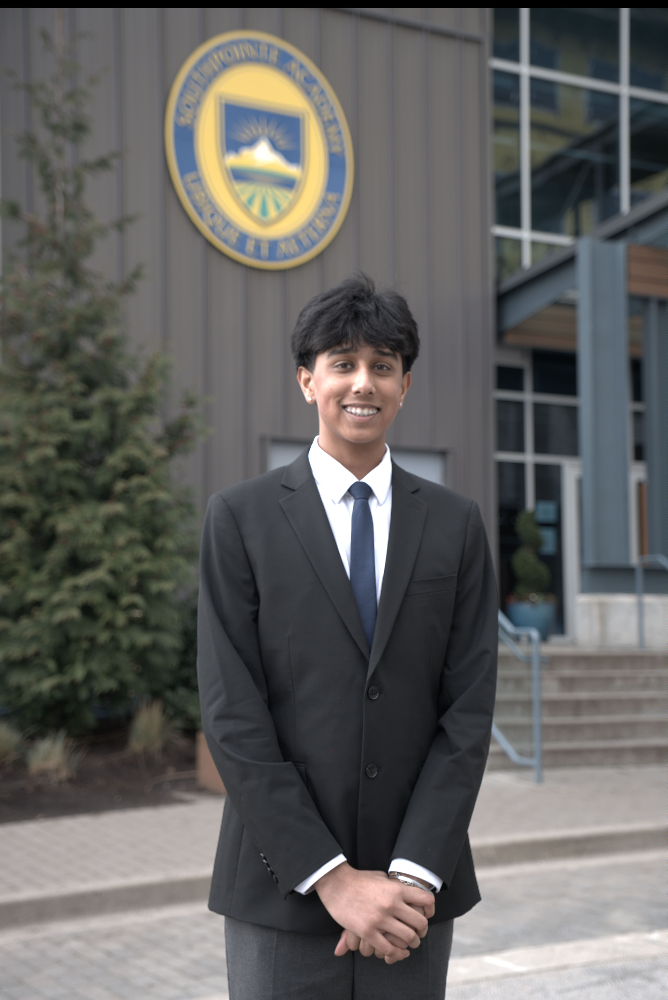
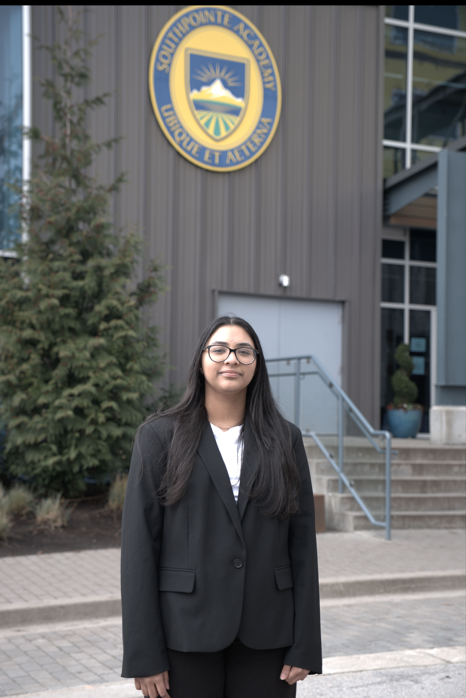
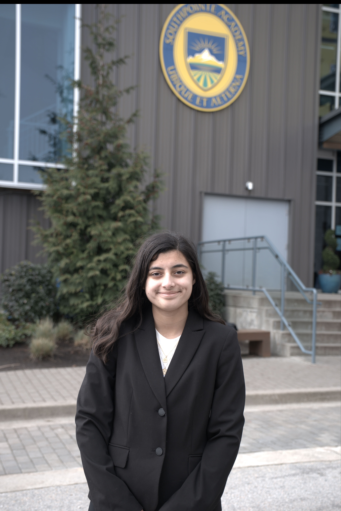
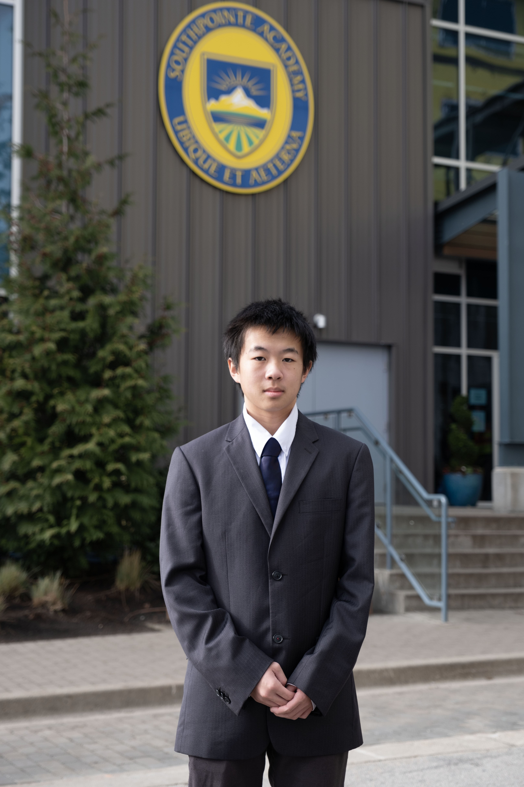
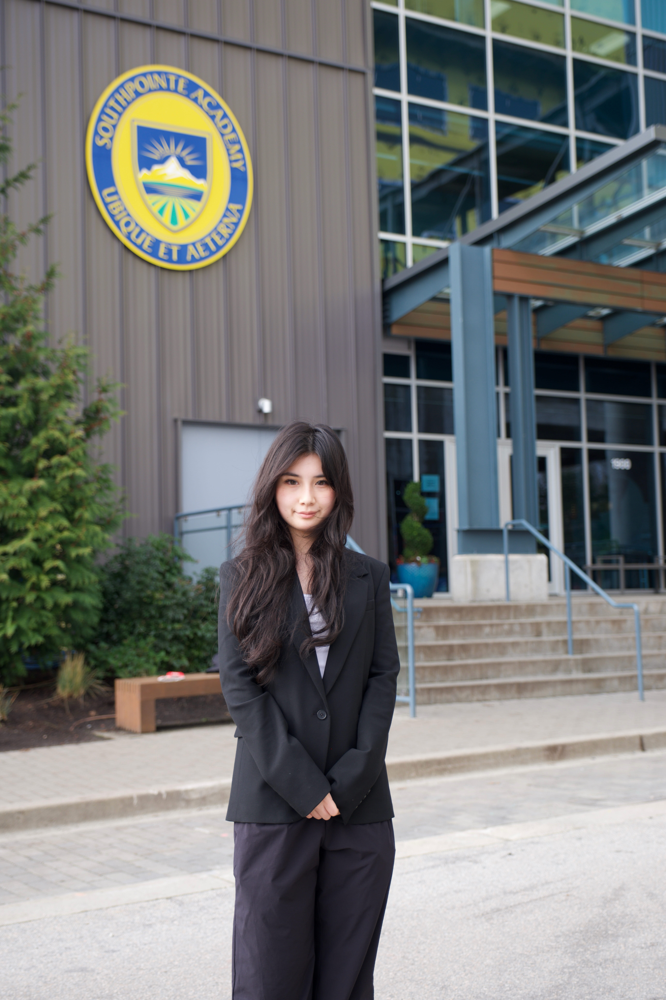
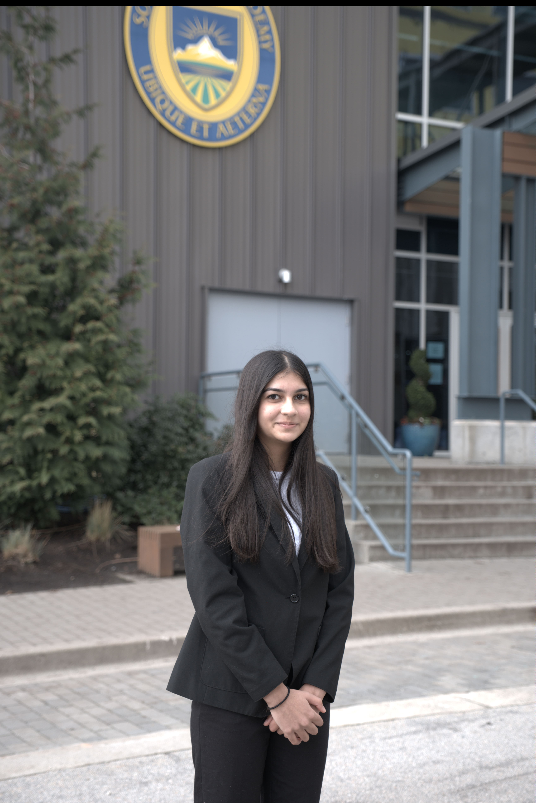
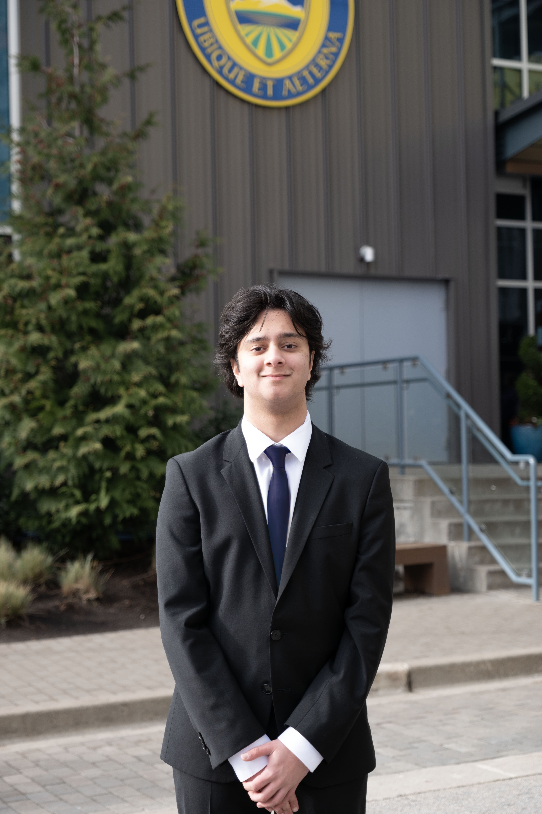
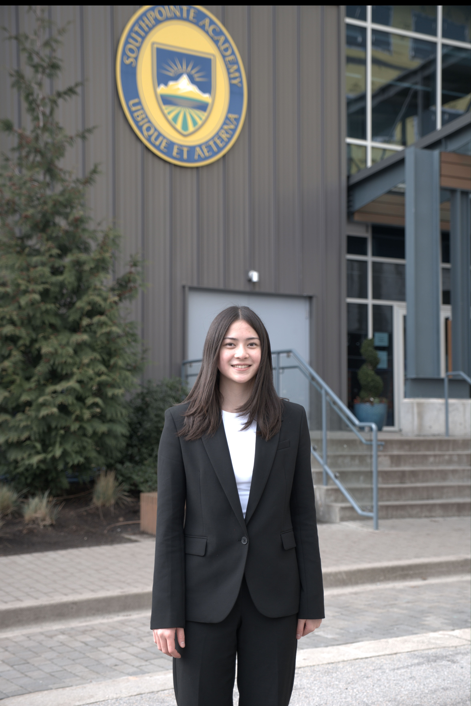
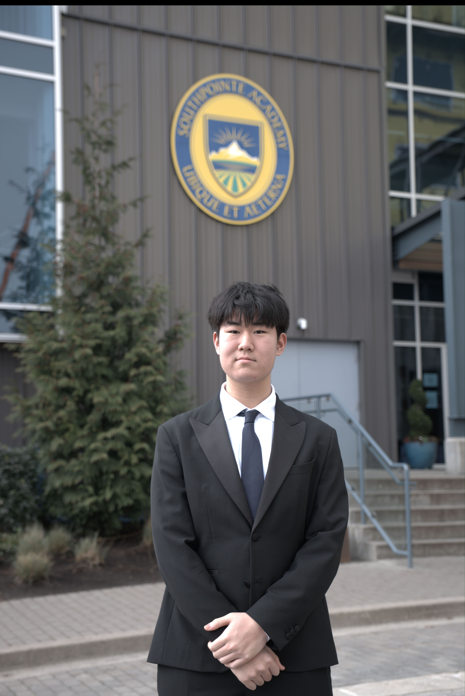

Our Team
Meet the SPAMUN Secretariat

Roshin Sangha
Secretary General
A Senior at Southpointe Academy, Roshin is eager to be your Secretary General for SPAMUN'26. He has been involved in Model UN since grade eight, and ever since attending his very first conference at SPAMUN'23 three whole years ago, he has a true passion for MUN and is thrilled to be leading the secretariat team. Roshin believes that Model United Nations is truly about bringing together diverse voices to understand global perspectives, growing as leaders, and inspiring change, one resolution paper at a time. Outside of MUN, Roshin can be seen lifeguarding in Richmond and spending time with his dog named Vader.
Expand description

Sukhmeet
Director General
As a senior at Southpointe Academy, Sukhmeet is honored to serve as the Director General at SPAMUN 2026. Model United Nations has become a memorable part of Sukhmeet’s high school journey. From going to the nearest grocery store for snacks, to binge watching her favorite shows in hotels during overnight conferences, it has been an amazing experience. Sukhmeet has enjoyed the heated morning crisis committee sessions, and the fast paced one minute speeches where she definitely used personal pronouns a few times. Outside of MUN, Sukhmeet can be found rewatching her favorite TV shows—Brooklyn 99, The Rookie, and Modern Family—or writing her book and trying to figure out what happens next.
Expand description

Sophie
USG of Delegate Affairs
As a senior at Southpointe Academy, Sophie is excited to be serving as the USG of Delegate Affairs for SPAMUN 2026. Sophie has been involved with MUN since Grade 10, where she attended a previous iteration of SPAMUN as her first conference. From grocery store runs to memorable time with friends at hotels, MUN has greatly enriched her high school experience. Sophie has enjoyed fiercely debating other delegates in crisis sessions and using the classic MUN speech hooks. Sophie is also commonly found planning all non-committee session time for her friends and herself at conferences. Outside of MUN, Sophie can be found listening to music nonstop or reading her favourite book series, The Hunger Games and Percy Jackson.
Expand description

Gordon Lian
Director of Tech & IT
As a sophomore at Southpointe Academy, Gordon is ecstatic to be your Director of Tech & IT for SPAMUN’26. He has been involved with Model UN since Grade 9, with almost extemporaneous preparation every tournament. He has found MUN to be advantageous and cordial, yet a conundrum. For some unknown reason, he has created more enemies than allies at every conference, through his inspiration from Friedrich Nietzsche, “What does not kill me makes me stronger.” Outside of MUN, he can be seen creating a myriad of computer projects, studying maths with Minecraft, and trying to get his first bid. Gordon hopes to make SPAMUN 2026 a fun experience for delegates, fostering meaningful connections for delegates alike.
Expand description

Willa
USG of Media & Design
As a sophomore turning junior at Southpointe Academy, Willa is delighted to serve as the USG of Media and Design! Her journey at MUN began at CAHSMUN Horizons 2024, her first overnight conference, where she participated as a delegate—though she can now be found far more frequently behind the camera capturing (or “clipping”) chaotic and exciting moments as part of the media team. Through MUN, she has formed meaningful friendships, collected unforgettable memories, and developed a notably extroverted personality. Outside of MUN, Willa can usually be found at her art studio, enjoying hearty meals at Bigway hotpot, or experimenting with various carbonara buldak recipes.
Expand description

Myla Sangha
Director of Logistics
As the only freshman turning sophomore at SPAMUN, Myla Sangha is extremely excited to take on the role of Director of Logistics! Through each MUN conference Myla has attended, she has grown not only in her skills for public speaking but in her passion to solve global crises. Her experience has strengthened her confidence as a delegate and pushed her to think outside the box when it comes to problem solving. Stepping into this new role, she is excited to help other delegates engage in riveting debate. Outside of MUN, Myla can be found playing Roblox late at night, practicing her flute, or competing in track meets.
Expand description

Nikhil
Director of Committees
As a sophomore going into his junior year at Southpointe Academy, Nikhil is exhilarated to serve as the Director of Committees for SPAMUN 2026! Ever since making his first nerve-wracking speech on the podium in front of 30 people, he has developed a great appreciation for MUN. Since Grade 9, Nikhil has debated his companions from his first small-time conference—SPAMUN—to moving on to overnight conferences and gaining confidence to speak in bigger crowds. In this time, Nikhil has learned valuable lessons about public speaking, teamwork, and diplomacy. Outside of MUN, Nikhil can be seen listening to music, criticizing the Canucks, or binging the latest TV shows.
Expand description

Ava
Chief of Staff
In her 10th year, going into her 11th, Ava is excited to serve as the Chief of Staff at SPAMUN 2026! Since nervously waddling into a committee room two years ago, she has grown to love the chaos and excitement of Model UN. Whether it's sprinting back to conferences after dinner or making new friends, Ava has found joy in every unpredictable moment. After serving on the dais of WHO at SPAMUN last year, Ava has enjoyed taking on leadership roles in MUN. Outside of the conference room, Ava is a competitive swimmer who somehow manages to drag herself out of bed for 6 am practices. When not at the pool, she can be found binge-watching movies and anime late at night.
Expand description

Ethan
Director of Outreach
A junior at Southpointe Academy, Ethan is thrilled to serve as your Director of Outreach for SPAMUN 2026. Since going to his first MUN conference with friends two years ago, he has participated in numerous conferences, each one deepening his appreciation for the community MUN provides—especially through working with media teams. He is excited to give back to the very conference that started his journey in MUN. Outside of committee sessions, Ethan can often be found taking flicks beside a basketball court or brainstorming his next creative idea. He is excited for a memorable weekend of great conversations, and welcoming everyone to SPAMUN 2026.
Expand description
Email Us
spamundelegateinquiries@southpointe.ca
Location
1900 56 St, Delta, BC V4L 2B1
© 2024 SPAMUN - All Rights Reserved